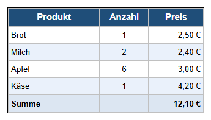

Lernpfad › Lektion 2
Zellen formatieren

Erst auswählen, dann formatieren
Die Schaltflächen auf der Registerkarte  Zelle (C) wirken auf die
ausgewählten Zellen:
Zelle (C) wirken auf die
ausgewählten Zellen:
- Klicken Sie auf eine Zelle;
- ziehen Sie die Maus über mehrere Zellen;
- klicken Sie auf einen Zeilenkopf (1, 2, 3 ...) oder Spaltenkopf (A, B, C ...) für eine ganze Zeile oder Spalte.
So machen Sie es selbst
- Öffnen Sie Ihren Einkaufszettel aus Lektion 1 (oder das Beispiel von Lektion 1).
- Die Kopfzeile: Klicken Sie auf den Zeilenkopf 1. Klicken Sie auf Fett und Zentrieren, wählen Sie als Zellenfarbe Dunkelblau, als Textfarbe Weiß und stellen Sie die Schriftgröße auf 11.
- Anzahl: Klicken Sie auf den Spaltenkopf B und auf Zentrieren.
- Preis: Klicken Sie auf den Spaltenkopf C und auf Rechtsbündig. So stehen die Beträge ordentlich untereinander.
- Abwechselnde Zeilen: Geben Sie Zeile 3 und Zeile 5 eine hellblaue Zellenfarbe. Eine lange Liste liest sich so viel leichter.
- Summe: Fügen Sie mit AR (Registerkarte Tabelle) eine Zeile hinzu, geben Sie Summe und den Betrag ein und machen Sie die Zeile fett.
Warum ausrichten?
Text liest man von links nach rechts, deshalb richten Sie ihn links aus. Zahlen und Beträge lassen sich besser vergleichen, wenn die Ziffern untereinander stehen: Richten Sie sie rechts aus. Kurze Werte wie eine Anzahl dürfen in die Mitte.
Aufgabe
Geben Sie der Zeile Summe eine hellgelbe Zellenfarbe und setzen Sie den Gesamtbetrag in Rot. Setzen Sie danach den Namen Käse kursiv, weil er noch nicht gekauft ist.
Lösung
Klicken Sie auf den Zeilenkopf von Summe und wählen Sie als Zellenfarbe Hellgelb. Klicken Sie danach nur auf die Zelle mit dem Betrag und wählen Sie als Textfarbe Rot. Klicken Sie auf die Zelle Käse und auf Kursiv.
Arbeiten Sie unter Linux? Öffnen Sie das Beispiel dann selbst mit Tabellendesigner öffnen: Ordner
lessen/de, Datei les02-opmaak.htd.